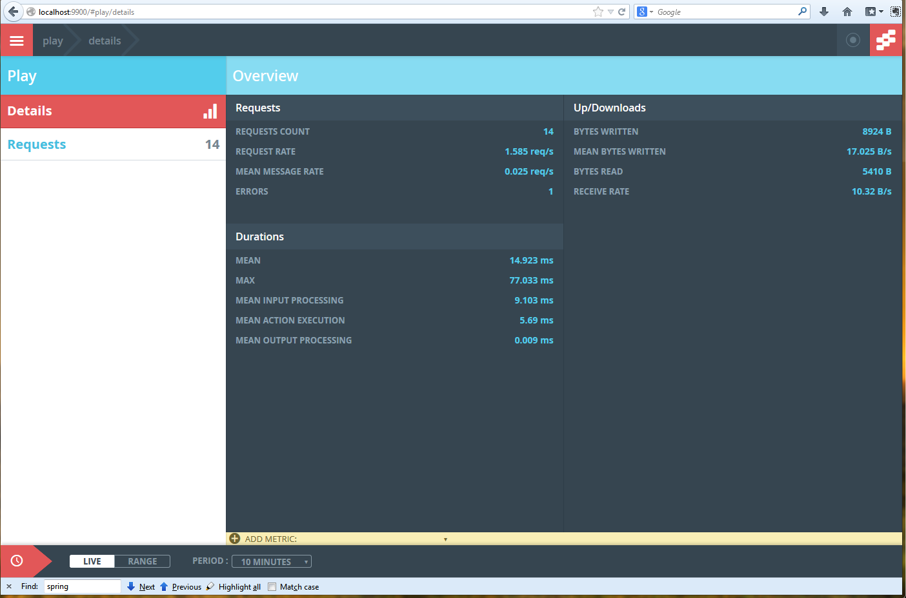

Monitoring Akka & Play
The how and the what
Jan Macháček @honzam399 | Alex Lashford @alexlashford
Why
Why monitor? What do you get, what happens when you don't ...
- Improved visibility
- Identify "Pain Points"
- Provide information to prevent the "big boom!"
Kinds of things in big system
CPU-intensive (XML parsing)
Non-reactive / blocking third-party libraries (DB drivers, ....)
The reactive rest (async HTTP libs, DB drivers, ...: most of them Netty, not Akka IO)
The ActorSystem
The bad stuff
Not making most of the hardware: low CPU, low memory, lots of context switches and idle threads
Actor queues growing too much
Ultimately, the system was slow: not responsive enough
Bulkhead the operations
Issolated the actor system into:
- CPU intensive
- legacy blocking code
- remaining reactive code
Creating different Dispatchers for the unruly code
tuning-dispatchers-in-akka-applicationsMonitor
what metrics did we want?
- The number of messages
- The sizes of queues
- The duration of messages in queue
- The duration of message in the
Actor.receive - Exceptions
Correlate with
Kill?
What the front-end is doing by Monitoring
- The number of HTTP requests
- Timing the HTTP responses
- Exceptions
Typesafe Console!
Brilliant, clients loved it, but ...
Development OK, in fact recommended
Unusable in production: memory footprint, data (MongoDB) size, the volume of data produced
Reactive Monitor
We wanted to record just enough information. Too much would slow the system under monitor down, too little would allow failures to go unnoticed.
- Actor creation & destruction.
- Message types, message rates, failures and performance at the actor level
- Queue size at the local actor level
- The number of active and running threads in the
ThreadPools orExecutorServices
And we wanted to have a flexible mechanism to deliver the monitoring output.
Reactive Monitor

We monitor
val system = ActorSystem()
val x = system.actorOf(Props[XActor])
val y = system.actorOf(Props[YActor])
x ! "foo"
y ! "foo"
y ! 42
We monitor
x ! "foo"; y ! "foo"; y ! 42

AspectJ
It allows us to instrument Akka's and Play's bytecode as it is loaded by the ClassLoaders. We can do
anything we like, as long as the instrumented bytecode verifies.

AspectJ
To turn on LTW, set the -javaagent JVM parameter, and add /META-INF/aop.xml.
<aspectj>
<aspects>
<aspect name="ActorCellMonitoringAspect"/>
<aspect name="DispatcherMonitoringAspect"/>
</aspects>
<weaver options="-verbose -showWeaveInfo">
<include within="akka.actor.*"/>
<include within="akka.dispatch.*"/>
<include within="scala.concurrent.*"/>
<include within="java.util.concurrent.*"/>
</weaver>
</aspectj>
AspectJ
public aspect ActorCellMonitoringAspect {
Object around(ActorCell actorCell, Object msg) :
call(* a.a.ActorCell.receiveMessage(..))
&& args(msg) && target(actorCell) {
// check configuration to see if we're interested
// publish 'delivered' events
// measuring performance
Object result = proceed(actorCell, msg);
// return null would do, but we are _proper_.
return result;
}
}
AspectJ
public aspect DispatcherMonitoringAspect {
before(ExecutorService es) :
call(* j.u.c.ExecutorService+.execute(..))
&& target(es) {
// publish 'active threads' count
// publish 'running threads' count
}
}
Configuration
The aspects need configuration for the agents and outputs.
- Decide which actors to monitor
- How to aggregate the monitoring data
- How to deliver the monitoring data
Configuration
Typesafe Config-style files at known locations configure the agent and output modules.
/META–INF/monitor/agent.conffor the agent/META–INF/monitor/output.conffor the output
Configuration
org.eigengo.monitor.agent {
output.class: "org...StatsdCounterInterface"
akka {
included: [
"akka:default.org...SimpleActor",
"akka://default/user/x"
]
sampling: [
{ rate: 5, for: [ "akka://default/user/*" ] }
]
}
}
Configuration
org.eigengo.monitor.output.statsd {
prefix: ""
remoteAddress: "localhost"
remotePort: 8125
refresh: 5
initialDelay: 5
constantTags: []
}
org.eigengo.monitor.output.codahalemetrics {
registry-class: "org...DefaultRegistryProvider"
naming-class: "org...DefaultNameMarshaller"
prefix: ""
refresh: 5
}
Output modules
The aspects load configurable output modules. Our client needed statsd / DataDog, but we have two more!
- statsd (with Datadog extensions)
- dtrace (on Solaris, dummy elsewhere)
- Codahale Metrics
Statsd
What is it?
UDP : ...
dtrace
What is it?
UDP : ...
Codahale Metrics
What is it?
UDP : ...
Into the battle!
- Dependencies for the agents and output modules you require
"org.eigengo.monitor" %% "agent-akka" % "0.4", "org.eigengo.monitor" %% "output-statsd" % "0.4" - Agent configuration in
/META-INF/monitor/agent.conf
and—if required—
Output configuration in/META-INF/monitor/output.conf /META-INF/aop.xmlto give configuration to the weaver
Was it OK?
What have we found?
Demo
Adding monitoring to some existing Akka application. See DD integration.
Demo
Adding monitoring to some existing Akka application. See DD integration.
War stories?
What have we learned in building large Akka system?
What have we learned in building the Reactive Monitor?
Thank you!
- Source at github.com/eigengo/monitor
- Slides at www.eigengo.com/monitoring-akka-play
- Tweets at @honzam399 | @alexlashford